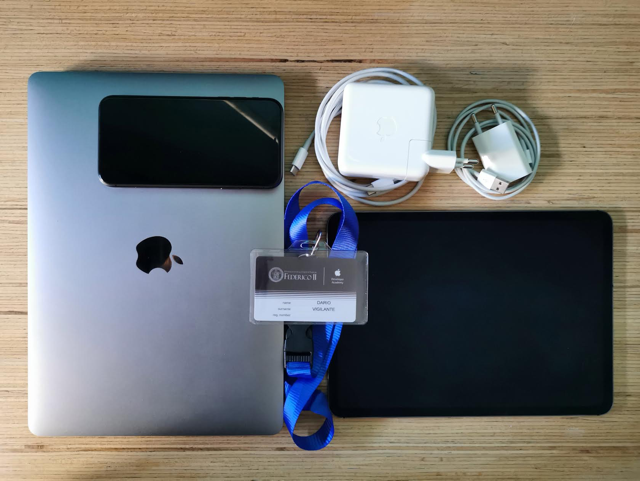
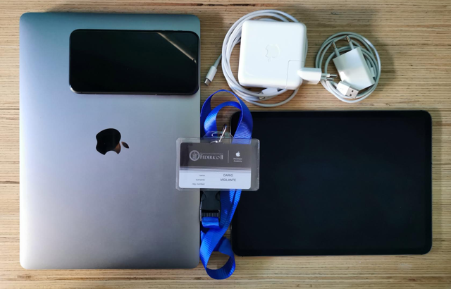
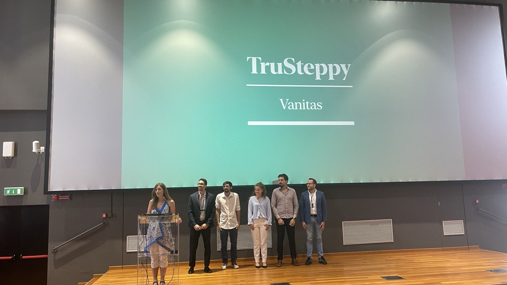
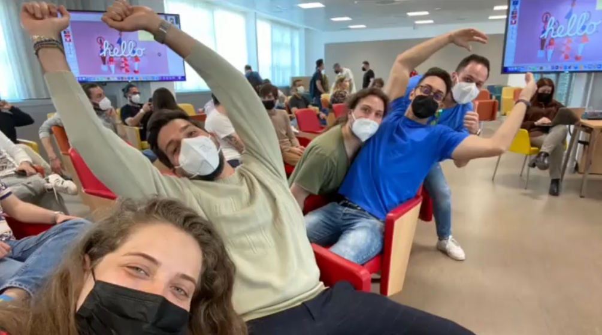

Dario Vigilante
- Show in: Mostra in: Mostrar em:
- +39 3396456131
- dario.vig@gmail.com
- www.dariovigilante.it
- Naples, Italy
- Napoli, Italia
- Nápoles, Itália

Hi I'm Dario Vigilante, a student at Federico II of Naples graduating in Engineering-Architecture and employee at Municipality of Naples with a solid passion in Technology and Computer science who recently started the Developer path.
If you are looking for a person who has no problem working in a multicultural team, loves to study and stay up to date, really into analyzing problems and always in search for possible solutions, I'm the person you want in your team.
Ciao sono Dario Vigilante, uno studente laureando in Ingegneria-Architettura presso la Federico II di Napoli e dipendente del Comune di Napoli con una grande passione per la Tecnologia e l'Informatica che da poco ha iniziato il percorso di Sviluppatore.
Se siete alla ricerca di una persona che non abbia problemi a lavorare in un team multiculturale, ami studiare e tenersi aggiornato, interessato dall'analisi dei problemi e sempre alla ricerca di possibili soluzioni, sono la persona che desiderate nel vostro team.
Olá sou Dario Vigilante, um estudante de Engenharia-Arquitetura a estudar atualmente na Federico II de Nápoles e a trabalhar no município de Nápoles com uma sólida paixão em Tecnologia e Ciência da Computação que recentemente iniciou o caminho de Desenvolvedor.
Se estão à procura de uma pessoa sem problemas em trabalhar numa equipa multicultural,que goste de estudar e se manter atualizado, realmente focado em analisar problemas e sempre em busca de possíveis soluções, eu sou a pessoa que procuram.
Work Experiences
Esperienze lavorative
Experiências de trabalho
Employee at Municipality of Naples
Impiegato presso Comune di Napoli
Empregado no Município de Nápoles
RIPAM Campania 2019 recruitment competition winner, period of work and on-the-job training from July 2020 to May 2021 with permanent contract from December 2021.
Vincitore concorso RIPAM Campania 2019, periodo di lavoro e training on-the-job da luglio 2020 a maggio 2021 con contratto a tempo indeterminato da dicembre 2021.
Vencedor do concurso de recrutamento RIPAM Campania 2019, período de trabalho e formação em serviço de julho de 2020 a maio de 2021 com contrato permanente a partir de dezembro de 2021.
- Drafting of administrative acts: Collection Orders, Liquidation Proceeding.
- Collection orders for payments made by bank transfers or cash.
- Management, updating and backup of the authority database.
- Management and backup of authority certified mail boxes.
- MEPA platform award procedures (Electronic Market for public administration).
- Redazione atti amministrativi vari: Ordinativi d'incasso, Atti di liquidazione.
- Ordinativi di incasso per pagamenti effettuati tramite bonifici o contanti.
- Gestione, aggiornamento e backup del database dell'ente.
- Gestione e backup di caselle di posta certificata dell'ente.
- Procedure di aggiudicazione su piattaforma MEPA (Mercato Elettronico della Pubblica Amministrazione).
- Elaboração de atos administrativos: Ordens de Cobrança, Processo de Liquidação.
- Ordens de cobrança para pagamentos efectuados por transferência bancária ou numerário.
- Gestão, atualização e backup do banco de dados de autoridades.
- Gestão e backup de caixas de correio certificadas por autoridade.
- Procedimentos de adjudicação da plataforma MEPA (Mercado Electrónico para a Administração Pública).
Other Experiences
Altre esperienze
Outras experiências
Workshop: Moovit University Program
Workshop: Moovit University Program
Workshop: Programa Universitário Moovit
Workshop organized by Moovit in collaboration with TeMALab, Territory, Mobility and Environment Laboratory and the Department of Civil, Construction and Environmental Engineering of Federico II University for mapping the local public transport networks in Campania region.
Workshop organizzato da Moovit in collaborazione con TeMALab, Laboratorio Territorio Mobilità e Ambiente e Dipartimento di Ingegneria Civile, Edile e Ambientale dell'Università Federico II per la mappatura delle reti di trasporto pubblico locale in Campania.
Workshop organizado pelo Moovit em colaboração com o TeMALab, Laboratório de Território, Mobilidade e Ambiente e o Departamento de Engenharia Civil, Construção e Ambiente da Universidade Federico II para o mapeamento das redes locais de transporte público na região da Campânia.

| Position held: | Posizione ricoperta: | Cargo ocupado: | UI/UX Designer, Front-End Developer | Activities: | Attività svolte: | Atividades: | Identification and mapping of public transport lines in Campania, generation of travel routes in QGIS, identification of bus timetables, insertion of data obtained on the Moovit platform. | Individuazione e mappatura delle linee di trasporto pubblico in Campania, generazione dei tracciati di percorrenza in QGIS, individuazione degli orari dei mezzi, inserimento dei dati ottenuti sulla piattaforma di Moovit. | Identificação e mapeamento de linhas de transporte público na Campânia, geração de rotas de viagem em QGIS, identificação de horários de ônibus, inserção de dados obtidos na plataforma Moovit. |
|---|
Workshop: Architecture and Landscape of City Centers
Workshop: Architettura e Paesaggio dei centri urbani
Workshop: Arquitetura e Paisagismo dos Centros das Cidades
Workshop organized by the Municipality of Nola from 28 to 31 May, with presentation of design proposals for the redevelopment of the Roman amphitheater and the area surrounding the "Foro Boario".
Workshop organizzato dal Comune di Nola dal 28 al 31 maggio, con presentazione di proposte progettuali per la riqualificazione dell'anfiteatro Romano e dell'area circostante il "Foro Boario".
Workshop organizado pela Câmara Municipal de Nola de 28 a 31 de maio, com apresentação de propostas de projeto para a requalificação do anfiteatro Romano e da área envolvente ao "Foro Boario".
| Position held: | Posizione ricoperta: | Cargo ocupado: | Architect, Graphic Designer | Architetto, Grafico | Arquiteto, Designer Gráfico |
|---|---|---|---|---|---|
| Activities: | Attività svolte: | Atividades: | Realizzazione sopralluoghi, rilievo e campagna fotografica della zona dell'anfiteatro, Analisi storica, studio del contesto morfologico, ideazione di proposte progettuali compatibili con l'area e realizzazione delle tavole con l'utilizzo di Archicad, Autocad e render con Lumion. | Realization of inspections, survey and photographic campaign of the area of the amphitheater, historical analysis, study of the morphological context, creation of project proposals compatible with the area and realization of the posters with the use of Archicad, Autocad and render with Lumion. | Realização de visitas de inspeção, levantamento e campanha fotográfica da área do anfiteatro, análise histórica, estudo do contexto morfológico, criação de propostas de projetos compatíveis com a área e realização dos cartazes com uso de Archicad, Autocad e render com Lumion. |
Projects
Progetti
Projetos
iOS App: TruSteppy
- App realized during MC-Final Challenge at Apple Developer Academy, using the iPhone's truedepth camera for 3D scanning of the environment to help blind and visually impaired to identify obstacles, giving them an extra-tool to walk autonomously.
- App realizzata durante l'MC-Final Challenge presso l'Apple Developer Academy che utilizza la fotocamera Truedepth dell'iPhone per la scansione 3D dell'ambiente per aiutare non vedenti e ipovedenti a identificare gli ostacoli, fornendo loro uno strumento in più per camminare autonomamente.
- Aplicativo realizado durante a Challenge final na Apple Developer Academy, usando a câmera truedepth do iPhone para a digitalização 3D do ambiente para ajudar invisuais e parcialmente invisuais a identificar obstáculos, dando-lhes uma ferramenta extra para caminhar de forma autónoma.


| Position held: | Posizione ricoperta: | Cargo ocupado: | UI/UX Designer, Front-End Developer | Main activities & responsibilities: | Principali attività e responsabilità: | Principais atividades e responsabilidades: | User Experience, Onboarding tutorial, App Icon, Depths color representation using truedepth camera data. | User Experience, Tutorial di introduzione, Icona dell'app, Rappresentazione della profondità attraverso i colori utilizzando i dati della truedepth camera. | User Experience, Tutorial de integração, ícone do aplicativo, Representação da profundidade com as cores usando dados da truedepth camera. |
|---|
iOS App: Pictopia
- App realized during MC2-MC3-Callenges at Apple Developer Academy to help beginner photographers to achieve their goals by exploring new methods and techniques about the world of photography, discovering courses and diving into exciting challenges.
- App realizzata durante le Challenge MC2 ed MC3 presso l'Apple Developer Academy per aiutare i fotografi principianti a raggiungere i loro obiettivi e ad esplorare il mondo della fotografia, scoprendo nuove tecniche e tuffandosi in sfide entusiasmanti.
- App realizado durante as Challenges MC2-MC3 na Apple Developer Academy para ajudar fotógrafos iniciantes a atingir seus objetivos explorando novos métodos e técnicas sobre o mundo da fotografia, descobrindo cursos e mergulhando em desafios emocionantes.


| Position held: | Posizione ricoperta: | Cargo ocupado: | UI/UX Designer, Front-End Developer | Main activities & responsibilities: | Principali attività e responsabilità: | Principais atividades e responsabilidades: | User Interface, User Experience, App Icon, Main views and search, API requests to manage records on the iCloud public container. | User Interface,, User Experience, Icona dell'app, Viste principali e ricerca, Richieste API per gestire i record sul container pubblico di iCloud. | User Interface, User Experience, ícone do aplicativo, Vistas principais e pesquisa, solicitações de API para gerenciar registros no contêiner público do iCloud. |
|---|
iOS App: iTalktoYou
- App realized during MC1-Callenge at Apple Developer Academy that provides a way for students with autism or communication diseases to be able to understand or express their own feelings and necessities by using a specific tool based on the Picture Exchange Communication System (PECS), an augmentative and alternative communication (AAC) system that uses visual symbols to teach the learner to communicate with other individuals.
- App realizzata durante la Challenge MC1 presso l'Apple Developer Academy che offre agli studenti con autismo o disturbi della comunicazione un modo per comprendere o esprimere i propri sentimenti e necessità utilizzando uno strumento specifico basato sul Picture Exchange Communication System (PECS), un Sistema di comunicazione aumentativa e alternativa (CAA) che utilizza simboli visivi per insegnare allo studente a comunicare con altri individui.
- App realizado durante a Challenge MC1 na Apple Developer Academy que oferece aos alunos com autismo ou doenças da comunicação uma forma de entender ou expressar seus próprios sentimentos e necessidades usando uma ferramenta específica baseada no Picture Exchange Communication System (PECS), um Sistema de comunicação aumentativa e alternativa (AAC) que usa símbolos visuais para ensinar o aluno a se comunicar com outros indivíduos.

| Position held: | Posizione ricoperta: | Cargo ocupado: | UI/UX Designer, Front-End Developer | Main activities & responsibilities: | Principali attività e responsabilità: | Principais atividades e responsabilidades: | User Interface, User Experience, Main views, Data model and "Card" objects. | User Interface, User Experience, Viste principali, Modello dati e oggetti "Carte". | User Interface, User Experience, Vistas principais, modelo de dados e objetos "Card". |
|---|
Lab: San Vincenzo pier restoration proposals
Lab: Proposte di restauro per il molo San Vincenzo
Lab: Propostas de restauração para o cais de San Vincenzo
Architectural Restoration Lab and Exam with design proposal by redevelopment for the S. Vincenzo pier with the Professor Arch. Renata Picone, Full Professor of Restoration e Director of the School of Specialization in Architectural Heritage and Landscape of the University of Naples "Federico II".
Laboratorio ed Esame di Restauro Architettonico con proposta progettuale di riqualificazione per il molo S. Vincenzo sostenuto a pieni voti con la Professoressa Arch. Renata Picone, Professore Ordinario di Restauro e Direttore della Scuola di Specializzazione in Beni Architettonici e del Paesaggio dell’Università degli Studi di Napoli “Federico II”.
Laboratório e exame de Restauração Arquitetônica com proposta de projeto pela requalificação do cais de S. Vincenzo com a Professora Arq. Renata Picone, Professora Titular de Restauração e Diretor da Escola de Especialização em Patrimônio Arquitetônico e do Paisagem da Universidade de Nápoles "Federico II".


| Position held: | Posizione ricoperta: | Cargo ocupado: | Architect, Graphic Designer | Architetto, Grafico | Arquiteto, Designer Gráfico | Main activities & responsibilities: | Principali attività e responsabilità: | Principais atividades e responsabilidades: | Realization of inspections and photogrammetric survey with Agisoft Photoscan, Measurements with trilateration, Union and photo-straightening of elevations on Adobe Photoshop, Diagnosis of instability and deterioration phenomena on the facade, Description of consolidation interventions. | Realizzazione sopralluoghi e rilievo fotogrammetrico con Agisoft Photoscan, Misurazioni con trilaterazione, Unione e fotoraddrizzamento prospetti su Adobe Photoshop, Diagnosi dei dissesti e dei fenomeni di degrado in facciata, Descrizione degli interventi di consolidamento. | Realização de inspeções e levantamento fotogramétrico com Agisoft Photoscan, Medições com trilateração, União e fotoendireitamento de elevações em Adobe Photoshop, Diagnóstico de fenômenos de instabilidade e deterioração na fachada, Descrição de intervenções de consolidação. |
|---|
Education
Educazione
Educação
-
Exams taken:
Esami sostenuti:
Exames realizados:
- Architectural restoration 30 e lode/30
- Economy and valuation in civil engineering 24/30
- Foundations 27/30
- Law and Anthropology 29/30
- Hydraulic constructions 28/30
- Construction technique 30/30
- Construction science 28/30
- Organization of the construction site 27/30
- Infrastructure architecture 30 e lode/30
- Architecture and architectural composition III 28/30
- Architecture and architectural composition I 30/30
- Technical architecture II 26/30
- Technical architecture I 28/30
- Territorial governance tools 30/30
- Urban planning technique II 27/30
- Urban planning technique I 28/30
- History of architecture II 30/30
- History of architecture I 28/30
- Architectural design III 28/30
- Architectural design I 27/30
- Mathematical analysis II 25/30
- Mathematical analysis I 27/30
- General physics 27/30
- Geometry 28/30
- Materials technology and applied chemistry 28/30
- Restauro architettonico 30 e lode/30
- Economia ed estimo civile 24/30
- Fondazioni 27/30
- Diritto e Antropologia 29/30
- Costruzioni idrauliche 28/30
- Tecnica delle costruzioni 30/30
- Scienza delle costruzioni 28/30
- Organizzazione del cantiere 27/30
- Architettura delle infrastrutture 30 e lode/30
- Architettura e composizione architettonica III 28/30
- Architettura e composizione architettonica I 30/30
- Architettura tecnica II 26/30
- Architettura tecnica I 28/30
- Strumenti di governo del territorio 30/30
- Tecnica urbanistica II 27/30
- Tecnica urbanistica I 28/30
- Storia dell'architettura II 30/30
- Storia dell'architettura I 28/30
- Disegno dell'architettura III 28/30
- Disegno dell'architettura I 27/30
- Analisi matematica II 25/30
- Analisi matematica I 27/30
- Fisica generale 27/30
- Geometria 28/30
- Tecnologia dei materiali e chimica applicata 28/30
- Valorização económica e civil 24/30
- Fundações 27/30
- Direito e Antropologia 29/30
- Construções hidráulicas 28/30
- Técnica de construção 30/30
- Ciência da Construção 28/30
- Organização do canteiro de obras 27/30
- Arquitetura de infraestrutura 30 cum laude/30
- Arquitetura e composição arquitetónica III /30
- Arquitetura e composição arquitetónica I 30/30
- Arquitetura técnica II 26/30
- Arquitetura técnica I 28/30
- Ferramentas de ordenamento do território 30/30
- Técnica de planejamento urbano II 27/30
- Técnica de planejamento urbano I 28/30
- História da arquitetura II 30/30
- História da arquitetura I 28/30
- Desenho arquitetónico III 28/30
- Desenho arquitetónico I 27/30
- Análise matemática II 25/30
- Análise matemática I 27/30
- Física geral 27/30
- Geometria 28/30
- Tecnologia de materiais e química aplicada 28/30
Remaining:
Ancora da sostenere:
Ainda a ser suportado:
- Technical and environmental physics
- Fisica tecnica ed ambientale
- Física técnica e ambiental
Polytechnic School Federico II University of Naples, ItalyScuola Politecnica e delle scienze di base - Università Federico II di Napoli, ItaliaEscola Politécnica Federico II Universidade de Nápoles, ItáliaPresentPresentePresente -
Apple Developer Academy is a collaboration between the University of Naples Federico II and Apple; the training program is focused on software development, startup creation and app design with an emphasis on creativity and collaboration to enable students to develop the skills needed to succeed.Apple Developer Academy è una collaborazione tra l'Università di Napoli Federico II e Apple; il programma formativo è focalizzato sullo sviluppo software, la creazione di startup e la progettazione di app con enfasi sulla creatività e la collaborazione per rendere gli studenti in grado di sviluppare le competenze necessarie per avere successo.Apple Developer Academy é uma colaboração entre a Universidade de Nápoles Federico II e a Apple; o programa de treinamento é focado no desenvolvimento de software, criação de startups e design de aplicativos com ênfase na criatividade e colaboração para permitir que os alunos desenvolvam as habilidades necessárias para o sucesso.
Previous NextThe Kit
Il Kit
O Kit
Final presentation: Trusteppy
Presentazione finale: Trusteppy
*****

Position held: Posizione ricoperta: Cargo ocupado: Developer, Student Sviluppatore, Studente Attività svolte: Realizzazione applicativi iOS in SwiftUI, UI/UX Design, Graphic Design, Prototyping, casi applicativi di AI e Machine Learning.
Apple Developer Academy of Naples, ItalyApple Developer Academy di Napoli, ItaliaApple Developer Academy de Nápoles, ItáliaSeptember 2021 - June 2022Settembre 2021 - Giugno 2022Setembro de 2021 - Junho de 2022 -
Exams taken:
Esami sostenuti:
Exames realizados:
- Proiectare asistată de calculator 1 [Computer aided design] 9/10
- Mecanica structurilor 2 [Mechanics of structures] 7/10
- Mecanica structurilor 1 [Mechanics of structures] 9/10
- Studiul formei 1 [Study of shape] 6/10
- Teoria arhitecturii 3 [Theory of architecture] 6/10
- Proiectare de arhitectură 3 [Architectural design] 5/10
- Construcţii 2 [Constructions] 7/10
- Clădiri inteligente [Smart buildings] 10/10
- Finisaje 1 [Finishes] 8/10
- Lemnul în arhitectura contemporană [Wood in contemporary architecture] 8/10
- Proiectare asistată de calculator 1 [Progettazione assistita da computer] 9/10
- Mecanica structurilor 2 [Meccanica delle strutture] 7/10
- Mecanica structurilor 1 [Meccanica delle strutture] 9/10
- Studiul formei 1 [Studio della forma] 6/10
- Teoria arhitecturii 3 [Teoria dell'architettura] 6/10
- Proiectare de arhitectură 3 [Progettazione architettonica] 5/10
- Construcţii 2 [Costruzioni] 7/10
- Clădiri inteligente [Edifici intelligenti] 10/10
- Finisaje 1 [Finiture] 8/10
- Lemnul în arhitectura contemporană [Legno nell'architettura contemporanea] 8/10
- Proiectare asistată de calculator 1 [Desenho assistido por computador] 9/10
- Mecanica structurilor 2 [Mecânica das estruturas] 7/10
- Mecanica structurilor 1 [Mecânica das estruturas] 9/10
- Studiul formei 1 [Estudo da forma] 6/10
- Teoria arhitecturii 3 [Teoria da arquitetura] 6/10
- Proiectare de arhitectură 3 [Projeto arquitetónico] 5/10
- Construcţii 2 [Construções] 7/10
- Clădiri inteligente [Edifícios inteligentes] 10/10
- Finisaje 1 [Acabamentos] 8/10
- Lemnul în arhitectura contemporană [Madeira na arquitetura contemporânea] 8/10
Polytechnic University of Timișoara, RomaniaSeptember 2014 - July 2015Università Politecnica di Timișoara, RomaniaSettembre 2014 - Luglio 2015Universidade Politécnica de Timişoara, RomêniaSetembro de 2014 - julho de 2015 -
Final grade: 96/100
Voto finale: 96/100
Nota final: 96/100
Liceo Scientifico Filippo Silvestri of Portici (NA), ItalyJuly 2012Liceo Scientifico Filippo Silvestri of Portici (NA), ItaliaLuglio 2012Liceo Scientifico Filippo Silvestri de Portici (NA), ItáliaJulho de 2012

Other Courses
Altri corsi
Outros cursos
-
Training and strengthening course "Skills and tools for the public employee" at Formez PA - Service, assistance, studies and training center for the modernization of the Public Administration.
Corso di formazione e potenziamento "Competenze e strumenti per il pubblico dipendente" presso Formez PA - Centro Servizi, assistenza, studi e formazione per l'ammodernamento della Pubblica Amministrazione.
Curso de treinamento e fortalecimento "Competências e ferramentas para o funcionário público" no Formez PA - Centro de atendimento, assistência, estudos e treinamento para a modernização da Administração Pública.
Formez PA, ItalyJuly 2020 - May 2021Formez PA, ItaliaLuglio 2020 - Maggio 2021Formez PA, ItáliaJulho de 2020 - Maio de 2021 -
Training cycle "The Fridays of safety" relating to the figure of safety coordinator in the design phase (CSP) and safety coordinator in execution phase (CSE). Final certificate of competency issued by Training and Safety Center (CFS) in Naples.
Ciclo formativo “I venerdì della sicurezza” relativo alla figura del coordinatore della sicurezza in fase di progettazione (CSP) e del coordinatore della sicurezza in fase di esecuzione (CSE). Attestato finale rilasciato dal Centro Formazione e Sicurezza (CFS) di Napoli
Ciclo de formação “As sextas-feiras da segurança” relativo à figura do coordenador de segurança em fase de projeto (CSP) e coordenador de segurança em fase de execução (CSE). Certificado final de competência emitido pelo Centro de Treinamento e Segurança (CFS) em Nápoles.
CFS Naples, ItalyNovember 2019 - January 2020CFS Napoli, ItaliaNovembre 2019 - Gennaio 2020CFS Nápoles, ItáliaNovembro de 2019 - Janeiro de 2020 -
40 hour course in Parametric 3D Modeling and shaping of 3D printable models with Rhino Grasshopper, in collaboration with FabLab of "Città della Scienza" in Naples.
Corso di 40 ore di Modellazione 3D Parametrica e generazione di modelli stampabili 3D con Rhino Grasshopper, in collaborazione con il FabLab di Città della Scienza di Napoli.
Curso de 40 horas em Modelagem 3D Paramétrica e modelagem de modelos de impressão em 3D com Rhino Grasshopper, em colaboração com FabLab de "Città della Scienza" em Nápoles.
Federico II University of Naples, ItalyMarch 2017 - September 2018Università Federico II di Napoli, ItaliaMarzo 2017 - Settembre 2018FabLab - Universidade Federico II de Nápoles, ItáliaMarço de 2017 - Setembro de 2018